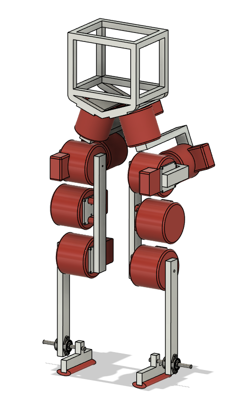
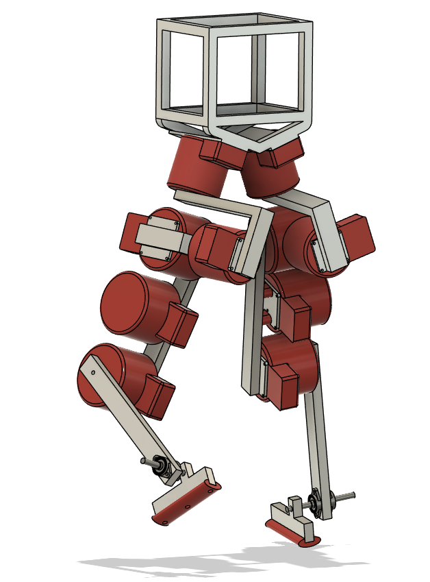
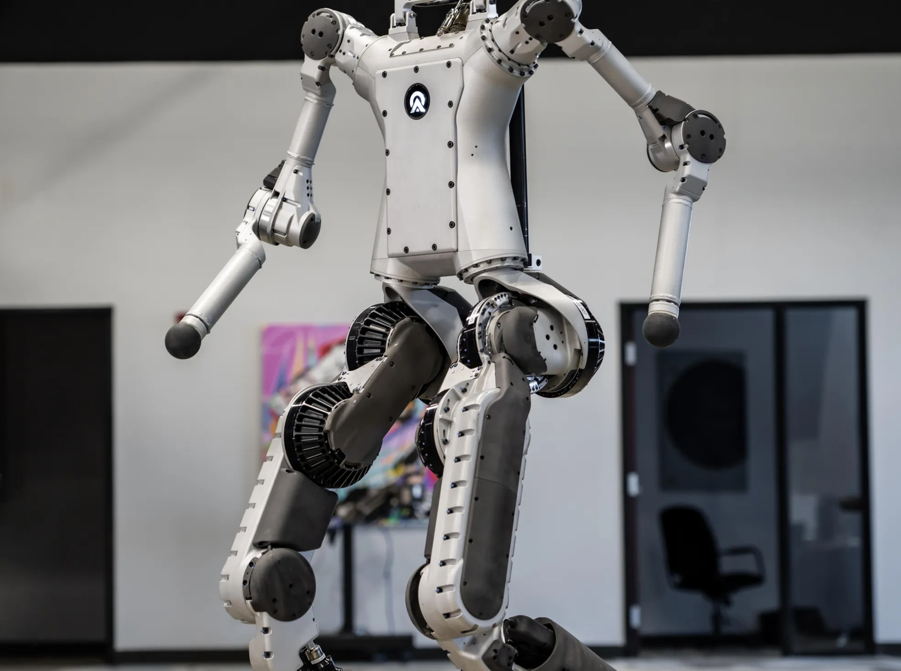
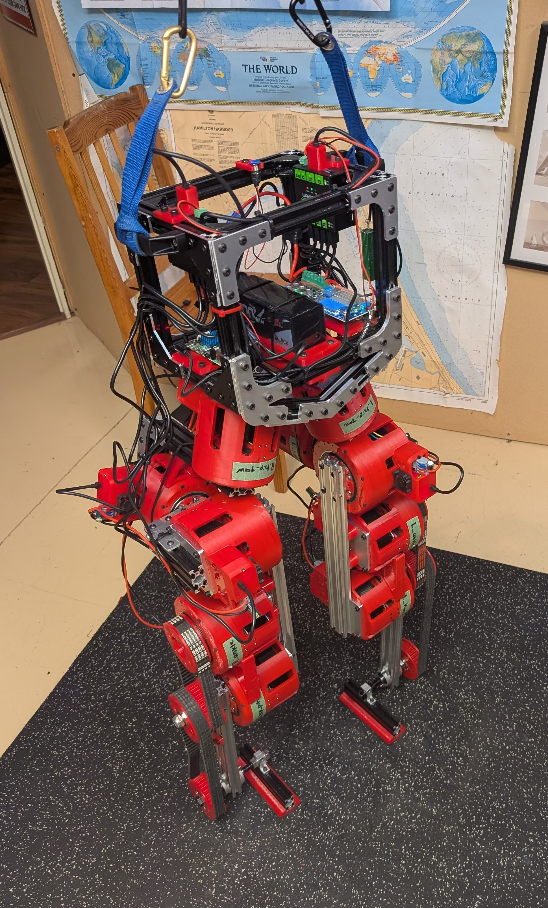
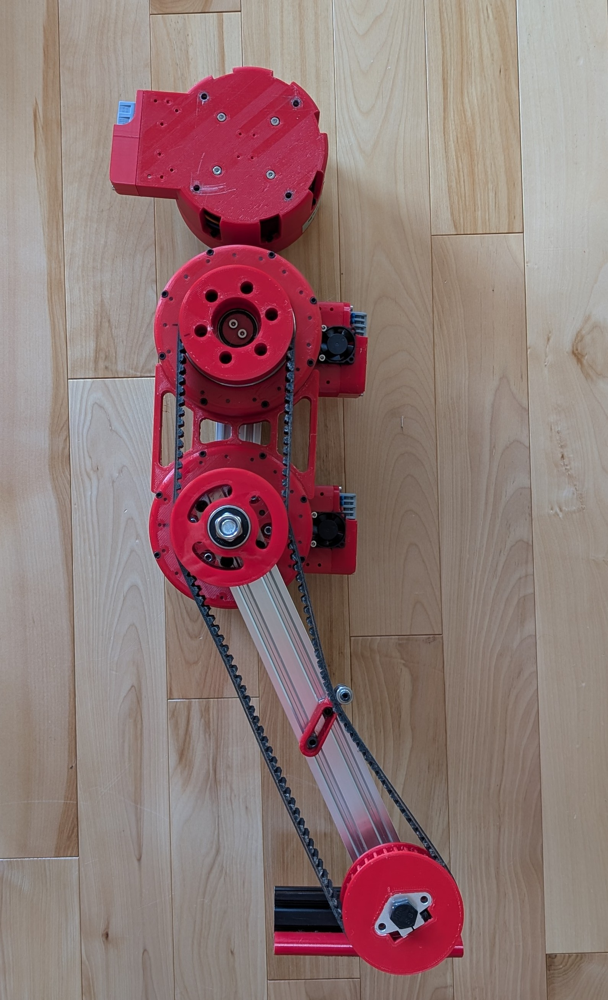

1. Design Philosophy
Kinematic Topology & The Pendulum Model
A defining characteristic of this 10-DOF architecture is the aggressive centralization of mass. The specific joint topology—particularly the compact, intersecting axes of the hip assembly—draws direct structural inspiration from platforms like Apptronik's QDH (Quick Development Humanoid). By keeping the heaviest actuation clustered at the hip, the leg's baseline inertia is kept as low as possible. Furthermore, by utilizing the aforementioned belt transmission, the heavy ankle actuators are completely removed from the foot and relocated to the mid-thigh.
From a dynamic perspective, a robotic limb acts as a compound pendulum during the swing phase. Foundational biomechanics literature [1] established that the natural swing frequency and energetic efficiency of a leg are fundamentally dictated by its mass distribution. Modern high-performance robotic equivalents mathematically demonstrate that mechanical work during dynamic locomotion is heavily dominated by the energetic cost of accelerating and decelerating the swing leg [2].
References
- S. Mochon and T. A. McMahon, "Ballistic walking," Journal of Biomechanics, vol. 13, no. 1, pp. 49-57, 1980.
- P. M. Wensing, A. Wang, S. Seok, D. Otten, J. Lang, and S. Kim, "Proprioceptive Actuator Design in the MIT Cheetah: Impact Mitigation and High-Bandwidth Physical Interaction for Dynamic Legged Robots," IEEE Transactions on Robotics, vol. 33, no. 3, pp. 509-522, June 2017.



Distal mass (heavy weight located at the extremities) drastically increases the leg's moment of inertia. By combining the Apptronik-inspired hip architecture with a Digit-style mid-thigh ankle actuator, the platform minimizes this distal inertia. This centralization significantly reduces the torque requirements on the hip actuators and unlocks the rapid swing-leg retraction speeds necessary to survive dynamic fall recovery and achieve zero-shot sim-to-real transfer.
Modularity & General-Purpose Links
The physical architecture of the biped prioritizes modularity to support the rapid, unpredictable iteration cycles inherent to custom hardware development. The primary structural limbs—specifically the thigh and shank—are constructed from general-purpose T-slot aluminum extrusions. While custom-machined carbon fiber tubes might offer slight weight savings, T-slot aluminum provides an excellent weight-to-length ratio while unlocking immense adjustability.

